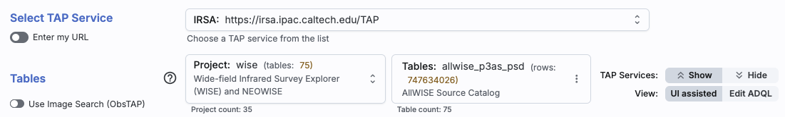
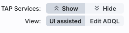

Firefly: TAP Searches
VO TAP searches that retrieve some sort of tables, many of which are catalogs. For the results of any of these
searches, if the tool recognizes positions in a catalog, it will
overlay the catalog on images and make plots.
Contents of page/chapter:
+Introduction & Terminology
+General TAP Search
+Interactive Target Refinement
+VO TAP: More about constraints
+VO ObsCore: More about constraints
+TAP Search
+ObsCore Search
+NED Objects -- Searching for NED objects
+VO SCS -- VO Simple Cone Search
There is a lot of terminology in this chapter to understand.
There are myriad places on the web to learn more about TAP queries and
ADQL, as well as all the rest of the VO standards and protocols. We
just provide a brief overview here in the context of this tool.
Firefly can help you interactively create ADQL which then you can
copy and use in your own code elsewhere.
By using TAP and ObsTAP queries, you can use IRSA (or someone else's)
services to talk to other archives that also comply with these
standards, world-wide.
This section assumes you already know how to work with tables in Firefly.
This is the kind of search you access when you select the "Tables
(TAP)" tab.
When you first go to this tab, you will see this near the top of your
screen:

At the top, you now have a choice of which TAP service you want to use,
and it defaults to IRSA's. You can select your favorite from the list,
or use the toggle on the left to enter your own custom URL. It will
remember your custom URL in the same session, so you can select it
again later. If you
want to hide this top row after setting it (to, say, regain screen
real estate), look for this on the far right:

the "TAP Services:" button (show/hide) will
reveal or conceal this top row.